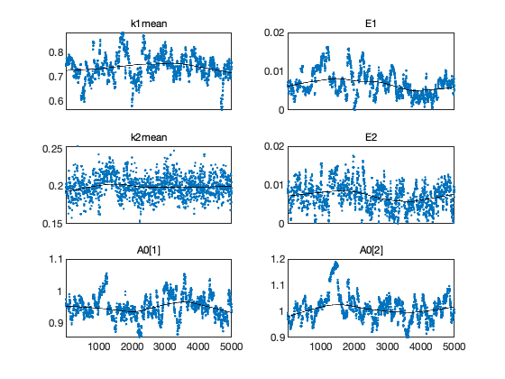
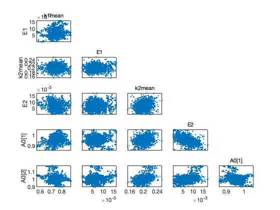
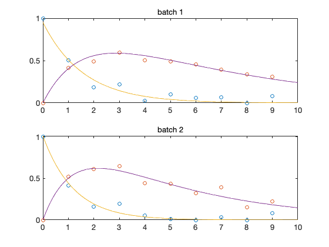
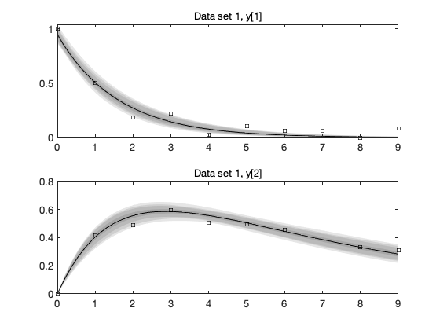
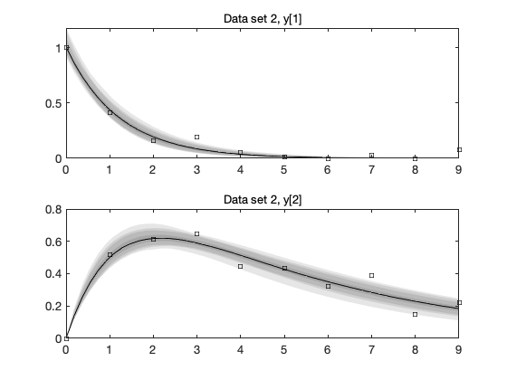

MCMC toolbox » Examples » Boxo
Boxo chemical kinetics example.
Chemical kinetics example. We model reactions A -> B -> C, with Arrhenius temperature dependence in the reaction rates. Model is an ode system. See boxoM.m for the model function and boxoODE.m for the ode system function.
Model unknowns are reaction rate parameters k1 and k2, activation energies E1 and E2 and the initial concentrations of A in both the batches (total of 6 unknowns).
% This will take some time if |boxoM| does not use |lsode_mex|. clear model data params options
Set some parameters for the run.
method = 'dram'; % adaptation method, 'mh', 'dr', 'am', or 'dram' nsimu = 5000; % number of simulations adaptint = 500; % how often to adapt the proposal
Data
We have two data sets (=batches).
data{1}.ydata = [
% time A B
0 1.000 0.000
1 0.504 0.416
2 0.186 0.489
3 0.218 0.595
4 0.022 0.506
5 0.102 0.493
6 0.058 0.458
7 0.064 0.394
8 0.000 0.335
9 0.082 0.309
];
data{2}.ydata = [
% time A B
0 1.000 0.000
1 0.415 0.518
2 0.156 0.613
3 0.196 0.644
4 0.055 0.444
5 0.011 0.435
6 0.000 0.323
7 0.032 0.390
8 0.000 0.149
9 0.079 0.222
];
Model parameters
The initial values for A and B and the (fixed) temperatures are local to the batches. Initial value for A has some error in it, but B is assumed to be exactly 0.
params = {
% name, init, min, max, mu, sig, target?, local?
{'k1mean', 1.0, 0, Inf, NaN, Inf, 1, 0}
{'E1' , 0.01, 0, Inf, NaN, Inf, 1, 0}
{'k2mean', 1.0, 0, Inf, NaN, Inf, 1, 0}
{'E2', 0.01, 0, Inf, NaN, Inf, 1, 0}
{'Tmean', 300, -Inf, Inf, NaN, Inf, 0, 0}
{'Temp' , [283 313], 0, 0, NaN, Inf, 0, 1}
{'A0', [1.0 1.0], 0, Inf, 1, 0.1, 1, 1}
{'B0', [0.0 0.0], 0, Inf, NaN, Inf, 0, 1}
};
Model options
% model.ssfun = @boxoSS; model.modelfun = @boxoM; % use mcmcrun generated ssfun instead model.sigma2 = 0.01; % initial error variance model.N0 = 4; % prior (invchisq) weight for sigma2 options.method = method; % adaptation method (mh,am,dr,dram) options.nsimu = nsimu; % n:o of simulations options.qcov = eye(11)*0.001; % proposal covariance options.adaptint = adaptint; % adaptation interval options.printint = 200; % how often to show info on acceptance ratios options.verbosity = 1; % how much to show output in Matlab window options.waitbar = 1; % show garphical waitbar options.updatesigma = 1; % update error variance options.stats = 1; % save extra statistics in results
MCMC run
As we start from non optimized values the chain will need some time to find the location of the posterior. We do 3 runs, starting from the values of the previous run.
results = []; [results,chain,s2chain,sschain]=mcmcrun(model,data,params,options,results); [results,chain,s2chain,sschain]=mcmcrun(model,data,params,options,results); [results,chain,s2chain,sschain]=mcmcrun(model,data,params,options,results);
Sampling these parameters: name start [min,max] N(mu,s^2) k1mean: 1 [0,Inf] N(1,Inf) E1: 0.01 [0,Inf] N(0.01,Inf) k2mean: 1 [0,Inf] N(1,Inf) E2: 0.01 [0,Inf] N(0.01,Inf) A0[1]: 1 [0,Inf] N(1,0.1^2) A0[2]: 1 [0,Inf] N(1,0.1^2) Using values from the previous run Sampling these parameters: name start [min,max] N(mu,s^2) k1mean: 0.751341 [0,Inf] N(1,Inf) E1: 0.00591968 [0,Inf] N(0.01,Inf) k2mean: 0.211658 [0,Inf] N(1,Inf) E2: 0.00648117 [0,Inf] N(0.01,Inf) A0[1]: 0.987673 [0,Inf] N(1,0.1^2) A0[2]: 1.05326 [0,Inf] N(1,0.1^2) Using values from the previous run Sampling these parameters: name start [min,max] N(mu,s^2) k1mean: 0.793011 [0,Inf] N(1,Inf) E1: 0.00572464 [0,Inf] N(0.01,Inf) k2mean: 0.209713 [0,Inf] N(1,Inf) E2: 0.00922497 [0,Inf] N(0.01,Inf) A0[1]: 1.01171 [0,Inf] N(1,0.1^2) A0[2]: 1.02802 [0,Inf] N(1,0.1^2)
Chain plots
figure(1); clf mcmcplot(chain,[],results,'chainpanel'); figure(2); clf mcmcplot(chain,[],results,'pairs'); 
Plot of the data and the mean posterior fit
mcmean = mean(chain); % posterior mean parameter vector figure(3); clf for i=1:results.nbatch subplot(2,1,i) plot(data{i}.ydata(:,1),data{i}.ydata(:,2:3),'o'); t = linspace(0,10); % time for plots th = results.theta; % the whole parameter vector, including not sampled th(results.parind) = mcmean; % set sampled components thi = th(results.local==0|results.local==i); % local parameters [t,y] = ode45(@boxoODE,t,thi(end-1:end),[],thi); hold on; plot(t,y); hold off title(sprintf('batch %d',i)); end
Preditive plots
We need to augment the time in ydata to get more plot points datamerge in the toolbox does this.
time = linspace(0,9,50)'; % new time vector
data{1}.ydata = datamerge(data{1}.ydata,time);
data{2}.ydata = datamerge(data{2}.ydata,time);
Function mcmcpred calculates the predictive plots, and mcmcpredplot does the plot.
out = mcmcpred(results,chain,[],data,@boxoM,500); h = mcmcpredplot(out,data,1); 